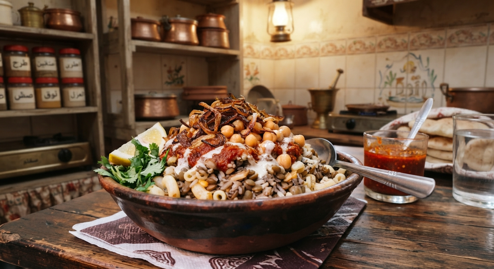

Home
Egyptian Koshari

Description
Egyptian Koshari is the ultimate comfort food and a beloved national dish. It is a hearty, flavorful combination of rice, macaroni, lentils, chickpeas, topped with crispy fried onions and a tangy, spicy tomato vinegar sauce (Daqqa).
Ingredients
- 1 cup brown lentils
- 1 cup macaroni pasta
- 1 cup small pasta (spaghetti broken into pieces)
- 1 cup white rice
- 1 can chickpeas, rinsed
- 2 large onions, thinly sliced and fried until crispy
- Tomato sauce and garlic vinegar (Daqqa)
Steps
- Cook the brown lentils in boiling water until tender, then set aside.
- Cook the rice and vermicelli together in a pot with oil and water.
- Boil the macaroni and spaghetti until al dente, then drain.
- Prepare the spiced tomato sauce and the garlic vinegar (Daqqa).
- Layer the dishes: start with a base of rice and pasta, add lentils and chickpeas, and top generously with crispy fried onions and tomato sauce.